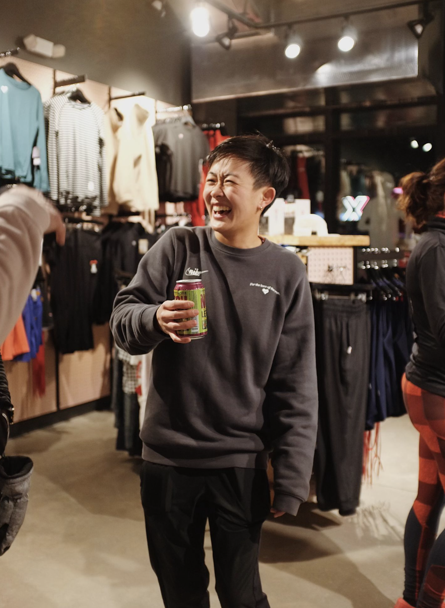

Running Coach
@ Heartbreak Hill Running Company
Jun 2021 - Present |
Coach for Boston's biggest running club. Lead and guide workouts for over 1000 runners in the greater Boston area, from couch-to-5kers to competitive local road racers |
Captain
@ Heartbreakers
Nov 2020 - Present |
Heartbreak Hill Running Company's USATF certified team. Lead community events such as voter registration runs, trash pick-up days, and public library engagement days |
Cross Country Coach
@ Brooke Charter Schools
Aug 2023 - Oct 2023 |
XC coach for Boston area high school. Student population is one of most diverse in Boston (>70% identify as Black or Latino). Ran workouts and attended five meets in greater Boston. |
Personal Coach
@ Self-Regulated
Nov 2019 - Present |
Provided training plans and guidance to 5 athletes, one of whom broke 3 hours in the marathon during quarantine! |
Marathon PR: 3:23:31 (That's a BQ as of 2024) :)
Half Marathon PR: — 1:36:28
5k: — 19:49
Want a closer look at my training and movement? Follow me on Strava!